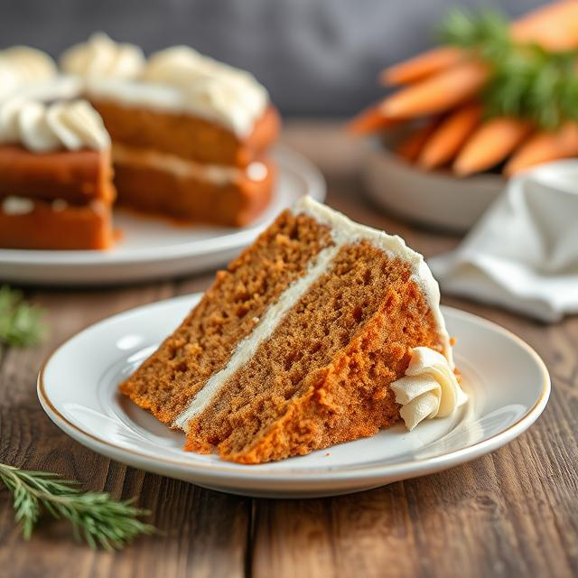

Carrot Cake

Ultimate Moist Carrot Cake with Cream Cheese Frosting
For an even more indulgent and flavorful carrot cake, I’ve added a few
tweaks that elevate the taste and texture. With hints of brown butter,
extra spices, and a bit of orange zest, this version is rich, aromatic,
and simply irresistible!
Ingredients
For the Cake
- 250 g plain flour
- 8 g baking powder
- 5 g bicarbonate of soda
- 3 g ground cinnamon
- 1 g ground nutmeg
- 1g ground ginger
- 1 g salt
- 200 g caster sugar
- 100 g brown sugar
- 4 large eggs
- 200 g sunflower oil
- 10 ml vanilla extract
- Zest of 1 orange
- 4 medium-sized finely grated carrots
- 100 g chopped walnuts or pecan, toasted for extra flavour
-
100 g sultanas or raisins, soaked in a bit of rum or orange juice
(optional)
- 50 g unsweetened coconut flakes (optional)
For the Cream Cheese Frosting
- 250 g cream cheese, softened
- 150 g unsalted butter, softened
- 250 g icing sugar
- 5 ml vanilla extract
- 10-15 g orange juice (or to taste)
- A pinch of salt
Instructions
-
Preheat the oven to 180°C (160°C for fan-assisted). Grease and line a
23cm round cake tin with baking paper.
-
If using walnuts or pecans, toast them in a dry pan over medium heat for
3-5 minutes until fragrant and golden. Let them cool before chopping.
-
In a small pan, melt the butter over medium heat and cook until it turns
golden brown and smells nutty, about 3-5 minutes. Allow it to cool
slightly.
-
Sift the plain flour, baking powder, bicarbonate of soda, cinnamon,
nutmeg, ginger, and salt into a large bowl. Set aside.
-
In another bowl, whisk the eggs, caster sugar, brown sugar, vanilla
extract, orange zest, and browned butter until smooth and creamy.
-
Gradually add the dry ingredients to the wet mixture, folding gently
until fully combined.
-
Stir in the grated carrots, walnuts, sultanas, and coconut flakes (if
using). Mix until evenly combined.
-
Pour the batter into the prepared cake tin and smooth the top. Bake for
45-55 minutes, or until a skewer inserted into the centre comes out
clean. Let the cake cool in the tin for 10 minutes before transferring
to a wire rack to cool completely.
-
Beat the softened cream cheese and butter together until light and
fluffy. Gradually sift in the icing sugar and continue to beat until
smooth. Add the vanilla extract, orange juice, and a pinch of salt.
-
Once the cake is completely cooled, spread the cream cheese frosting
over the top. You can also frost the sides of the cake if desired.
Decorate with additional chopped walnuts or pecans, or candied orange
peel.
-
Slice and enjoy this rich, moist carrot cake with a cup of tea or
coffee!
This carrot cake is a perfect balance of moist, spiced cake and creamy
frosting—ideal for any occasion! 🥕🍰
Home